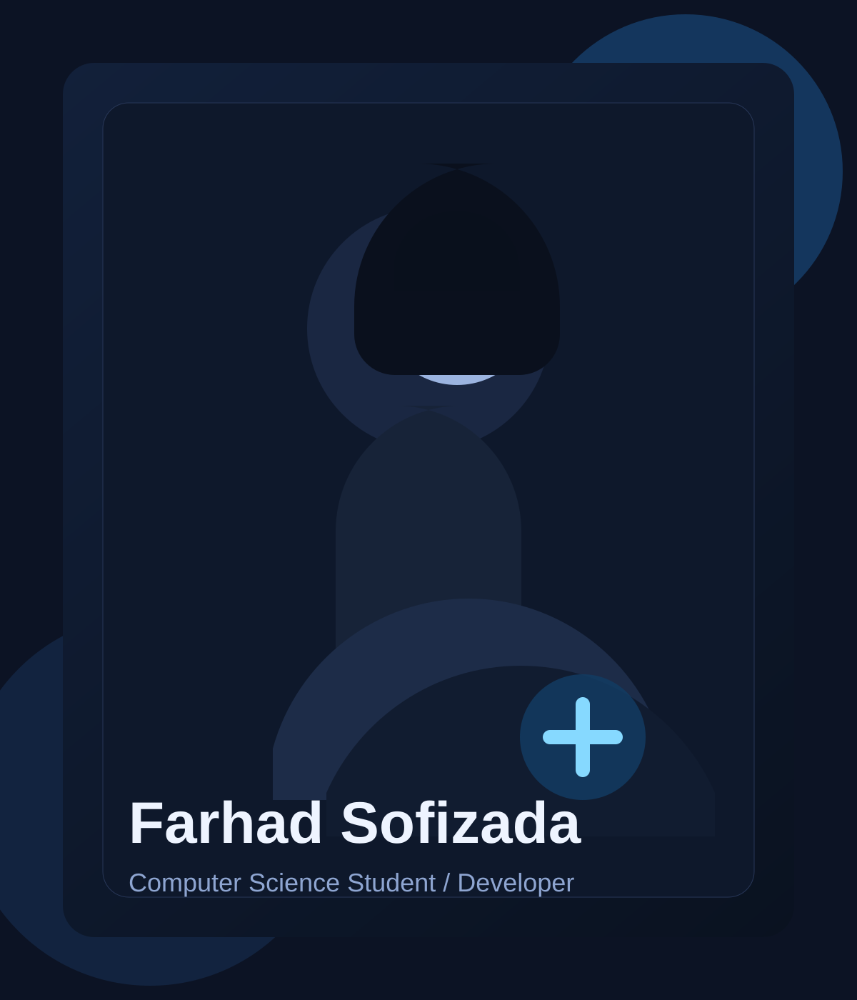

Computer Science Student / Developer / Builder
Thoughtful software, clean systems, and modern digital experiences.
I build projects that combine strong technical foundations with usability, clarity, and real-world purpose. My focus is on solving problems in a way that feels considered from both the engineering and human side.

About Me
A developer portfolio that leads with clarity.
I am a Computer Science student with an interest in software engineering, product thinking, and building systems that feel polished from the first interaction. I care about readable code, strong structure, and interfaces that do not waste attention.
How I work
I like intentional architecture, steady iteration, and projects that solve practical problems without unnecessary complexity.
What I build
My work spans web development, interactive software, and AI-oriented ideas where technical execution and user experience both matter.
What stands out
I focus on translating ideas into something useful, readable, and presentable, with enough personality to feel memorable.
Education History
Academic progress presented in a structured, readable format.
Keep this section concise and easy to scan.
Computer Science Studies
A strong foundation in software development, problem solving, and core computer science principles with emphasis on building practical systems.
Technical Concentration
Coursework and independent learning centered on programming fundamentals, data structures, front-end development, and applied project work.
Professional History
Experience framed with structure instead of long-form text.
This area can grow into a fuller timeline as needed.
Recent Work
Developer and Project Builder
Built portfolio-ready projects with attention to interface clarity, technical structure, and practical problem solving.
Ongoing
Technical Growth and Applied Learning
Continued developing skills through hands-on projects, iteration, and deeper familiarity with modern web development and software concepts.
Projects Preview
Selected work, presented simply.
AI / Product
Clinic Chatbot
A concept chatbot for patient support that improves access to answers and reduces friction in routine clinic communication.
- UX
- AI Concept
- Healthcare
Interactive
Maze Game
A gameplay-focused build using logic-driven movement and enemy behavior to create a more dynamic maze experience.
- C++
- Game Logic
- AI Behavior
Portfolio Clarity
Additional sections that improve professionalism without adding noise.
Skills
- C++
- Python
- HTML
- CSS
- JavaScript
- Git
- Data Structures
- Problem Solving
Recommended portfolio additions
A short resume link, brief experience timeline, and a compact contact section are the highest-value additions for a portfolio like this. They improve clarity without making the site feel overloaded.
Contact
Open to collaboration, learning, and strong project work.
The contact section stays intentionally compact so the portfolio remains easy to scan while still making it clear how to reach out.